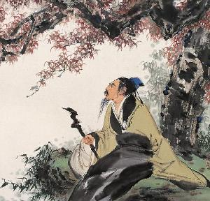

杜牧
杜牧（803年－约852年），字牧之，号樊川居士，汉族，京兆万年（今陕西西安）人。杜牧是唐代杰出的诗人、散文家，是宰相杜佑之孙，杜从郁之子。唐文宗大和二年26岁中进士，授弘文馆校书郎。后赴江西观察使幕，转淮南节度使幕，又入观察使幕，历任国史馆修撰，膳部、比部、司勋员外郎，黄州、池州、睦州刺史等职。
因晚年居长安南樊川别墅，故后世称“杜樊川”，著有《樊川文集》。杜牧的诗歌以七言绝句著称，内容以咏史抒怀为主，其诗英发俊爽，多切经世之物，在晚唐成就颇高。杜牧人称“小杜”，以别于杜甫，"大杜“。与李商隐并称“小李杜”。